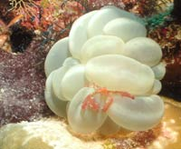
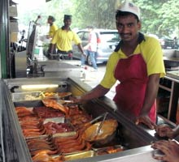
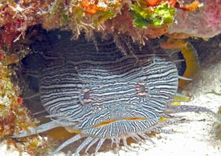

My Web Design Portfolio & My Life
menu
About Me
Portfolio
Website Design
Clients
Scuba
Photography
Playground
Connect
Travel & Underwater Photography Portfolio
My travel adventures documented through my camera lenses, on land and underwater represent life experiences that have left a
lasting impression
on me. Visit my
Flickr Collections
for more pictures from around the world.
James Sacci


